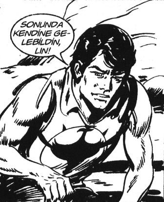

– Selamünaleyküm millet.
– Ve aleykümselam!
Ali Mahmut: Baba sen anlatmıyorsun; ama öğrendik durumları.
Musti: İki kere bayılmışsın. Üç kişilik bir müstahdem grubu sırf seni taşımış odadan odaya.
Hıdır, “Pıh pıh!” diye güldü: “Kim anlattı Allah aşkına?”
Ati: Abi, Kahveci Şahin’in akrabası geldi geçen. Sizin bakanlıkta çaycıymış.
Muhabbet sırasında, kimi tanıyon, kimi tanıyon derken o anlattı. Yalnız seni çok seviyor. Şahin Abi’yi de dinleyince “Bundan sonra bakanlıkta kimse ona bulaşamaz, emrindeyim” dedi. İğdeli İsmail’miş adı.
Ahmedürey: Abi nedir? Hiç anlatmadın bize.
Hıdır: Ne biliyim baba. Bir “Kişisel gelişelim, değişelim, başarı gelsin güzelleşelim” dedim. Ağabey bir ayda 40’a yakın kitabı, tekrar tekrar okudum.
Dino: Eee?
– Ağabey çok ilginç! Hem hepsi birbirinin aynı hem birinin dediği ötekini tutmuyor.
Dino: Abi ikisi birden nasıl oluyor?
– Oluyor işte, git de bak. Biri “Hedef koy, dostlarınla paylaş” diyor. Öteki “Hedef koy, kimsenin haberi olmasın” diyor. Biri de “Her şeyinizi değiştirin” diyor. Ağabey, affedersin bir ara ismi de değiştirecektim; Cem veya Oğuz diye düşündüm. İkisinden biri. Dedemizin adı ama Hıdır ismiyle zor be baba. Berke falan yapmak lazım ismi. Bir adam Hıdır ismiyle başarılı olmuşsa, harbiden yetenekli olması lazım ağabey. Bende de o yok!
Şinasi: Abi öyle Cem, Oğuz ayrı düşüneceğine kombine bir isim yap, birleştir “Camuz” olsun.
Hi ho ha... (Tüm kahve, özellikle gençler)
– Ağabey sizin gibi ekiple gelişilmez tabii.
Ali Mahmut: Abi senin iş neye benziyor biliyor musun?
– Bilmiyorum da öğreneceğiz galiba.
Ali Mahmut: Abi bu gerçek, iki Karadenizli inşaat işçisi, Karşıyaka’da bir inşaatın üst katından aşağı, büyük varillerin içinde kiremit indirecekler, böyle büyük bir makarayla. Biri aşağıdan ipi tutuyor, öteki yukarıdan, beşinci kattan varili itiyor. Fakat ağırlığı hesaplamamışlar. Varil öyle ağır ki aşağı inerken aşağıdaki işçiyi yukarıya feci hızla çekiyor; amcam da ipi koluna bağlamış bırakamıyor. Varil aşağıya, laz işçi yukarıya, yarı yolda varille çarpışmışlar. İşçi 5. kata ulaşıp varil yere çarpınca sen dibi kırıl, kiremitler aşağıda kalmış. Boş varil yukarıya, bu sefer işçi aşağıya, yarı yolda yine çarpışıyorlar. İşçi aşağıda, kırık dökük var; ama sağ en azından. “Allah’a şükür” deyip ipi bırakıyor. Bu sefer varil doğru aşağıya, amcamın kafaya. Doğru hastaneye kaldırıyorlar. Sen de işçi gibi bi oku aşağı, bi daha oku yukarı.
– Harbiden hastanelik de oluyorduk, kık kık.
Ati: Oğlum bir kere öyle davranma. Şunu taklit et falan, insan kendi gibi olmazsa nasıl mutlu olur ki?
Ahmedürey: Oğlum evinde, eşinle çocuğunla mutlu ol, evine de ekmek götür, tamam değil mi?
Dino: Hanım da ne aşırı akıllı olacak ne de salak, kardeşim. Bir kere, bulmaca çözen kadın almayacaksın, çok akıllı oluyorlar.
Ali Mahmut: Abi Kibariye’ye soruyorlar, “MTV seyrediyor musun?” diye. “Em TV seyrediyom, em de radyo dinliyom” diyor.
Hi ha ha.
Şino: Oğlum yeşil sekizliyi demin almadın, şimdi niye alıyorsun?
Toplu: Elimize konuşmasana ya!
Hıdır, Ali’nin yanına süzüldü. Ali Kuyumcu’nun.
Ali: Bak abi, Yüzbaşı Volkan’ın ilk çizimleri...
– Süper ağabey. Ya ben bir de Yavru Türk dergisine hastaydım. Hatırlar mısın, Oğuz Kağan vardı. Bi de uzaya giden iki arkadaş.
Ali: Ya yeni sayıyı beklemekten telef olurdum.
– Ali, ben bir Demirci’ye gideceğim memlekete.
– Niye?
– Ya bizim Talat Ağabey’le görüşmeye.
– Ne yapıyor orada?
– Adam işletme mastırı yaptı yurt dışında. Geldi, şimdi Kavaklı Camii’nde imamlık yapıyormuş.
– Hadi ya.
– Gidenler çok memnun. Hem gençlerle sohbet ediyormuş. Caminin köşesine bir kütüphane kurmuş. Mahalledeki ilkokulda da voleybol takımı kurmuşlar. Biliyorsun süper voleybolcuydu. Çocukları Manisa şampiyonu yapmış.
– Ne konuşacaksınız?
– Ağabey biliyorsun kankamdır. Çok mutsuzum. Ömür geçiyor, ben hâlâ bağladıkları yerde otluyorum. Gidip konuşacağım.
– Arabayla mı gidiyorsun?
– Yok ya, çok yakıyor meret. Musti takım için sağ ol ağabey.
Musti: Boyu tuttu mu bari?
– Paçaları kıvırdık fakat sansasyon yaptı be ağabey.
– Oğlum üniversitede senin vatkalı, kırçıllı ceketi az mı giydik sırayla.
– Pıh pıh pıhh.
Şino: Hıdır, ne komik gülüyon oğlum sen!
Şahin: Beyler, çıkışta kutudan hikâyemizi alalım, ücretsiz.
GÜNÜN HİKÂYESİ
SAHTE HASTALIK
Eski Roma’da iktidar savaşları sırasında yöneticilerden kaçan, üst sınıfa mensup bir adam, tanınmamak için kılık değiştirmişti. Alt sınıfların yaşadığı bölgelerde kalıyordu; ama yine de ne olur ne olmaz, tanınmamak için aklına bir fikir geldi.
O sıralarda özellikle eski askerlerde çok sık görüldüğü üzere “tek gözlü” numarası yapmaya karar verdi. Bir gözünü bezlerle sıkı sıkı sarıp sarmaladı.
Gören herkes onu, tek gözünü savaşta kaybetmiş bir asker sanıyordu. Uzun bir süre böyle yaşadı. Sonra bir gün, yöneticilerin artık eskisi gibi kendisiyle ilgilenmediklerini, eskisi gibi aranmadığını öğrendi.
İlk iş olarak bir gözünü kapatan bezleri açtı, çıkardı, tekrar ikinci gözüne kavuşmak istiyordu. Ama sargıları çıkardığında anladı ki uzun zamandır kapalı kalan gözü artık görmüyor ve bundan böyle de açık olan diğer gözüyle görebilecek...
Kaveciniz Şahin İpek
İnternetten indirdim arkadaşlar.
“Golf kulübü üyeliğini iptal et [...]” dedi Julian. [...] “Sana özetlediğim prensiplerin altında akan spiritüel bir akıntı olduğunu da bilmelisin.” [17]
